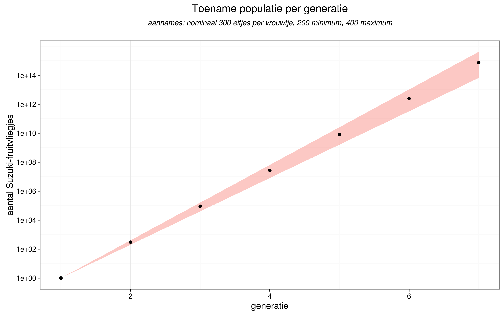
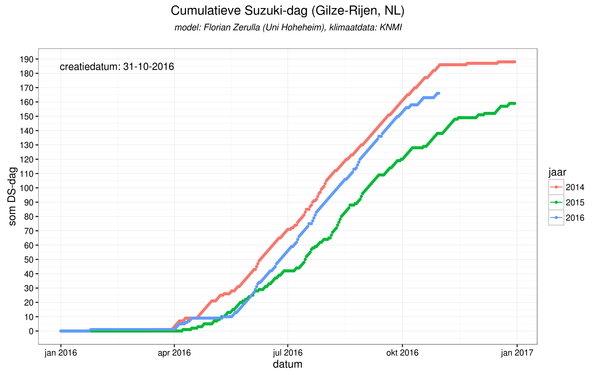
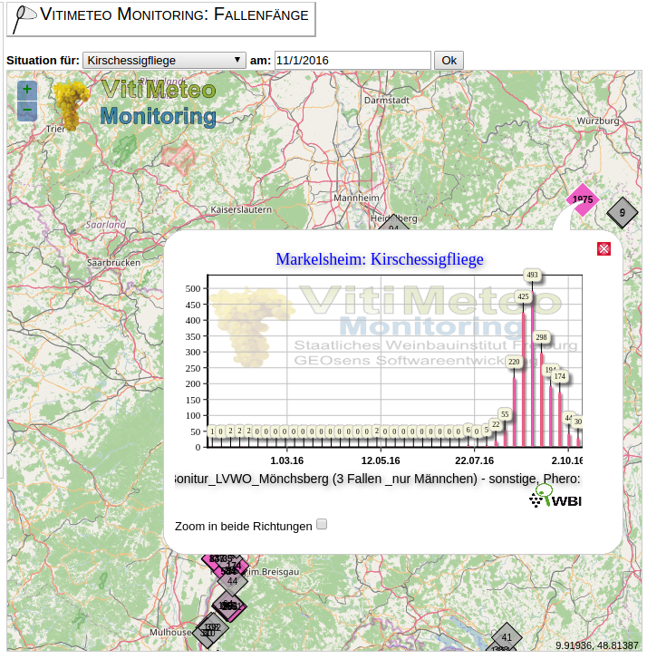

Applied Data Science
& een Suzuki-fruitvlieg populatie model
Bart van Hest (wijnbouw@brabantsewijnbouwers.nl)
3 november 2016
Achtergrond van de Opdracht
De hoofdrolspelers
| Vrouwtje van de Suzuki-fruitvlieg | Mannetje van de Suzuki-fruitvlieg |
|---|---|
 |
 |
- nieuw plaaginsect voor de zacht-fruit sector,
- kan in korte tijd een groot deel van de oogst vernietigen.
Het probleem?
Het vrouwtje boort gaaf fruit aan om eitjes te leggen.
Aangetast fruit leidt tot micro-biologische aantasting (…rot).
Fruit is daardoor onverkoopbaar/onverwerkbaar

Het probleem gevisualiseerd

Video Drosophila suzukii
Huidige maatregelen
Reactief nav waarschuwingen obv monitoring:
- bescherming (netten)
- verdelging (niet discriminatief)
Gewenste maatregelen
Actief obv verwachtingen tav de populatie-groei.
- bescherming aanbrengen voordat schade onstaat,
- populatie-groei onder controle houden dmv tijdige maatregelen,
- ‘if all else fails’: oogsten voordat de schade te groot wordt…
Doel
Een model om de populatie-groei van de Suzuki-fruitvlieg te voorspellen
Wijnbouw in Nederland
Nieuwe kansen voor wijnbouw
Wijnbouw in Nederland is (opnieuw) mogelijk door de hogere temperaturen in onze regio.
Kenmerken
- kleinschalig
- hoge kosten
- nieuwe rassen
- geen ervaring
- onbekend bij de consument
Wijnbouw in cijfers
- 150 professionele wijngaarden
- 260 hectare oppervlakte
- 900.000 liter wijn (pm 1.3 miljoen flessen)
Wikipedia cijfers 2007
- 560 leden (voornamelijk hobby, minderheid professioneel)
- 80 hectare oppervlakte
- 322.000 liter wijn (pm 460.000 flessen)
BWB cijfers 2016
Wijngaard Dassemus
Suzuki-fruitvlieg
Feiten
- Drosophila suzukii (officiele naam, vaak afgekort tot ‘DS’)
- ‘Spotted wing Drosophila’ (VS)
- ‘Kirschessigfliege’ (DE, vaak afgekort tot ‘KEF’)
- Japanse/Noord-Oost Aziatische oorsprong
- recente wereldwijde opmars
- sinds 2007/2008 in Italië en Spanje
- sinds 2010/11 in de VS
- sinds 2012 in Duitsland
- sinds 2014 in Nederland
Levenscyclus D. suzukii
levenscyclus
afhankelijk van T° en RV, van ei tot volwassenheid:
- Snelste : 8 dagen
- Gemiddeld: 20-30 dagen
Eileg per wijfje
7-16 eieren/dag, 384 eieren max. in 3-9 weken
Eileg in de ochtend- en avonduren, vanaf ongeveer april/mei afhankelijk status van vruchten en T°.
Larve
na 12-72 u uit ei (afh. van T°)
3 larvale stadia in fruit: 3-13 dagen
Pop in de vrucht of op het oppervlak ervan; 3-15 dagen
volwassen vliegen 3-15 dagen later
Het slechte nieuws
- weinig natuurlijke vijanden,
- hoge reproductiesnelheid (300-350 eitjes per vrouwtje),
- snel opeenvolgende generaties (30 dagen),
- 6 à 7 generaties per seizoen.

Alleen slecht nieuws?
Stagnatie van reproductiesnelheid
- \(T_{gem} < 10^o C\)
- \(T_{gem} > 35^o C\)
- \(RV_{gem} < 65 %\)
Wijnbouwkundige maatregelen
- loofwand open (zon & wind)
- onderbegroeing kort (droog)
- druivenschil verharden (waterglas)
- waardplanten verwijderen (ondoenlijk…)
- spuitmiddel (max. 2x/jaar, duur, schadelijk voor bijen, resistentie…)
- ?
Modellen
Bestaande modellen
Enkele eenvoudige en meer complexe modellen voor de populatiegroei
- “Predicting when Spotted Wing Drosophila begins activity using a Degree-day Model, Len Coop et al.”,
- “Integrating Temperature-Dependent Life Table Data into a Matrix Projection Model for Drosophila suzukii Population Estimation”.
Gebaseerd op slechts één parameter; de temperatuur (in zogenaamde graaddagen).
Bekende parameters zoals de relatieve luchtvochtigheid en de windkracht worden genegeerd.
Waarschuwingen obv BWB-‘model’
Graaddag (maat voor “positieve dag voor de ontwikkeling van de fruitvlieg”) uitbreiden met:
- gemiddelde dag temperatuur
- ongunstig als gemTemp < 10 of > 32,
- zeer gunstig als 20 \(<=\) gemTemp \(<=\) 23,
- anders gunstig,
- (gemiddelde) relatieve vochtigheid:
- ongunstig als gemRelVocht < 65%,
- anders gunstig
- (maximum) wind;
- ongunstig als maxWind > 8m/s (5 Beaufort),
- anders gunstig.
‘Suzuki-graaddag’: \(DD_{ds} = a * F_{temp} + b * F_{relvocht} + c * F_{wind}\)
Bedoeld om leden te waarschuwen om te starten met monitoring.
Resultaten BWB-‘model’
- 2014 vanaf vroeg in het seizoen gunstiger voor DS dan 2015.
- 2016 begon laat, eindigt dicht tegen 2014.

Mogelijke verbeteringen
- model ‘ijken’ tegen observaties,
- uitbreiden aantal variabelen,
- model baseren op levenscyclus (groeistadia/sterfte),
- ?
Data
Monitoringsdata:
- BWB monitoringsprogramma (csv-formaat: train 2015, test 2016)
- Uni Freiburg monitoringsprogramma (web-‘scraping’)
Klimaatdata:
Monitoringsdata/observaties
| Monitoringsdata BWB, | Freiburg |
|---|---|
 |
 |
Literatuur
- Invasion biology of spotted wing Drosophila (Drosophila suzukii): a global perspective and future priorities
- Predicting when Spotted Wing Drosophila begins activity using a Degree-day Model, Len Coop et al. pagina 2 en verder.
- Integrating Temperature-Dependent Life Table Data into a Matrix Projection Model for Drosophila suzukii Population Estimation
- Drosophila suzukii population estimation and development of a real-time risk model
- Humidity affects populations of Drosophila suzukii (Diptera: Drosophilidae) in blueberry
- Syllabus André M. de Roos, Institute for Biodiversity and Ecosystem Dynamics Population Biology Section
- Syllabus Rob J. de Boer Theoretical Biology & Bioinformatics Utrecht University
- populatie model gebaseerd op de Leslie matrix (gebruikt om de verschillende levenscycli van bijv. insecten te modelleren)
Vragen?